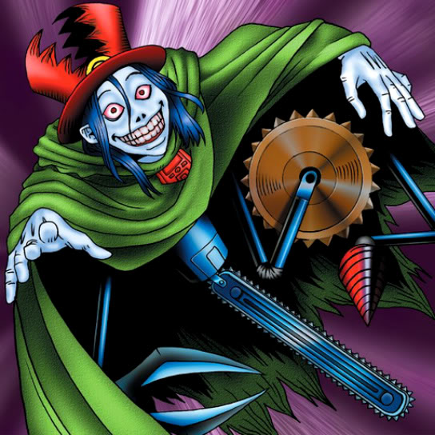

Trap Master

Description: "Able to move and attack without triggering an opponent's TRAP (LR)."
STATS
ATK: 500
DEF: 1100DECK COST
Deck Cost per Card: 21EFFECT NOT IMPLEMENTED
Fusion List (12 Possible Fusions)
- Trap Master + Ancient Jar = Minomushi Warrior
- Trap Master + Charubin the Fire Knight = Flame Swordsman
- Trap Master + Cyber Commander = Cyber Soldier
- Trap Master + Fire Eye = Charubin the Fire Knight
- Trap Master + Frenzied Panda = Tiger Axe
- Trap Master + Haniwa = Minomushi Warrior
- Trap Master + Holograph = Cyber Soldier
- Trap Master + Muka Muka = Minomushi Warrior
- Trap Master + One-Eyed Shield Dragon = Dragon Statue
- Trap Master + Pot the Trick = Minomushi Warrior
- Trap Master + Skull Servant = Zombie Warrior
- Trap Master + Tentacle Plant = Bean Soldier